物理图像
能谷作为导带极小值的简并
硅是间接禁带半导体，导带极小值不位于 点，而是沿六个等价 方向位移到布里渊区 -空间 附近，在 空间表现为六个旋转椭球等能面。每个椭球代表一条谷能级（valley），全部等价的谷态都被电子等概率占据，构成六重简并。电子囚禁在量子点中时，这六个谷态本应一起进入量子点能谱，给自旋比特留下额外的”泄漏门”——所以量子点必须先把六重简并一级一级劈开，最终只留一个谷用于编码）。
从体硅到量子点的逐级劈裂
体硅导带六重简并在材料工程与器件工程中分三步被解除：
-
双轴张应变。Si/SiGe 异质结中 Si 量子阱被夹在弛豫 SiGe 缓冲层之间，SiGe 晶格常数 （30% Ge 含量）大于 Si 的 ，薄硅层被迫与下方 SiGe 平面晶格常数一致，承受约 的双轴张应变 。应变使面外方向的两个 谷相对于面内四个 谷下移，原来的六重简并变为四重 （面内）与双重 （面外），且 远高于 。这一步骤把六重简并降至二重，并解释了为何电子处在 谷时面内有效质量仍为 ——这正是 Si/SiGe 量子点迁移率较高的根源。
-
纵向限制与栅极电场。栅压在 方向施加电场，破坏 的二重简并——所得到的能隙就是谷劈裂 。谷劈裂之后只剩最低谷用于自旋编码。
-
磁场打开自旋劈裂。在外磁场 下每个谷能级再次按自旋方向劈裂，自旋向上与自旋向下的能级差 ，完成自旋量子比特的能级准备。
点群对称性与电场调节
所引论文给出了对称性的语言刻画：在 Si-MOS 制备过程中体系点群从体硅的 经应变硅的 降到电极加电势后的 ，结构反演不对称性（structure inversion asymmetry, SIA）随之出现，对应 Rashba 自旋–轨道项 ，方向总是沿 ——这意味着 Rashba 项不产生自旋各向异性。当谷对称性被进一步打破后， 方向的两个 谷被对称界面电场和台阶劈开，能隙即为谷劈裂 。文献报告”在 Si-MOS 中的大小通常在 –“。
理论模型
二能级有效哈密顿量
把 两个谷态 、 张成子空间，最低阶的有效哈密顿量为（[materials-devices/silicon-sige|Si/SiGe]] 词条中的写法）
是界面势在两个谷态之间的矩阵元，反映了界面锐利度、纵向电场强度与谷相位分布的耦合。 越大， 越大；界面越”模糊”， 越被相消， 越小。
从晶体对称性到点群分析
对 Si-MOS 的具体讨论：
| 结构状态 | 点群 | 谷简并 |
|---|---|---|
| 体硅 | 六重 | |
| 应变硅（Si/SiGe、Si-MOS） | 二重 | |
| 电极加电势、不平整界面 | 完全劈裂 |
谷劈裂 对应 在 下的能量差。
谷劈裂的尺度估计
最低谷波函数被纵向电场压在界面势垒内侧，典型尺度为 Si-MOS 中 方向波函数分布 –、Si/SiGe 中 –。当电场把波函数挤得更紧时， 中的积分增大， 单调增大——这与”电场可调谷劈裂”的实验规律一致。
谷–轨道–自旋三耦合
在硅这类本征自旋–轨道耦合（intrinsic spin–orbit coupling, ISOC）较弱的体系中，谷的存在把自旋翻转的弛豫通道变成了”自旋–谷–轨道耦合”（spin–valley–orbit coupling）。 把自旋弛豫速率写成多个通道之和：
下标 SO/SV 分别指自旋–轨道与自旋–谷两类混合，J 表示 Johnson 噪声，ph 表示声子噪声， 是与磁场无关的本底通道。谷能级的存在直接放大 与 两个通道，是硅基自旋比特在某些磁场区间弛豫时间显著下降的重要原因。
与读取窗口的耦合
在 S–T₀ 比特 中，电子通过 – 跃迁读取，读取窗口取决于左量子点中 与 的能级差。在硅量子点里，这个”轨道差”本来远大于塞曼劈裂，因此窗口远大于自旋选择性隧穿读出；但若 态的电子被热激发到第一激发谷态，能级差被压回 量级，窗口立即受限——这就是 所说”在硅量子点样品中，由于谷能级的存在，仍然有可能导致读取窗口被限制”的根源。
统一理论：应变、共振与合金无序的相互作用
词条前述理论基于” 理论”——只计同一布里渊区内 两谷的直接耦合。Thayil 等人把三类长期分立的要素（应变、非平庸共振、随机合金无序）合并进一个包络函数框架：两个谷态的包络函数 由耦合包络方程
描述，其中 是单谷包络哈密顿量（含量子阱限制势 、电场势 与应变修正）， 是谷间耦合势（由异质结势与合金无序的傅里叶分量在谷间波矢处提供）；能带结构、应变与晶体对称性由经验赝势方法注入，合金无序则按 Ge 原子在原胞中的二项式抽样统计。谷劈裂等于基态与第一激发态的能量差，其统计服从瑞利分布，参数为确定性分量 与无序展宽 ——判据 把参数空间分成”确定性增强”与”无序主导”两区。
框架的关键新物理是剪切应变解锁低频共振。双轴张应变（）把六谷简并压成 两谷；沿 [110] 的剪切应变 则打破把两个 fcc 子晶格互换的非点式螺旋对称（子晶格位移由 Kleinman 内位移参数 控制），解锁 共振—— 是导带底到布里渊区边界的倒空间距离， 处势的傅里叶幅度远大于 处。后果直接改写工程判据：无剪切应变时，确定性增强要求约 1 个单层（ML）的锐界面；而 的温和剪切应变把该窗口扩到 5 个 ML——对界面锐度的苛刻要求大幅放松。
对摆动阱（wiggle well）——阱内 Ge 浓度按 振荡——的统一分析给出三种构型的完整画像：
- 均匀 Ge（）：白噪声型合金涨落在全波数贡献谷间耦合，平均 抬升，但增强完全由无序主导（）——低劈裂”热点”依然存在；
- 短周期摆动阱（）：共振随 Ge 幅度增长、与剪切应变无关，但要求 ML nm 的调制周期，超出现代外延技术；
- 长周期摆动阱（）：工程上最有吸引力的构型——剪切应变 （高 Ge 幅度）或 （微小幅度即可）就进入确定性增强区， 时 、平均谷劈裂随剪切应变线性增长，且对波数偏差鲁棒——自旋–谷热点可望被系统性压制。这正是自旋穿梭（电子被输运穿过微米级无序景观）所需要的”可靠大谷劈裂”。
另有低次谐波/Ge 尖峰构型（）：势与波函数各自以 为主频、乘积却有效激发 机制，但需 的高 Ge 含量，增强较弱（）且强自旋轨道副作用使比特控制复杂化——不如长周期摆动阱。
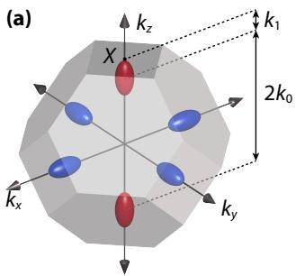
_能带与对称性框架：fcc 布里渊区中六个等价导带极小被双轴应变劈裂为两谷；剪切应变沿 [110] 进一步把晶体对称性从四方降到正交，打破映射两个 fcc 子晶格的非点式螺旋对称（子晶格位移由 Kleinman 参数 ζ 控制），解锁 2k₁ 共振。图源：Thayil et al. (2025), Fig. 1。_
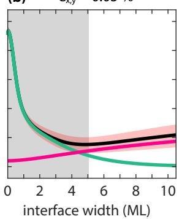
界面宽度判据的重写：无剪切应变（ε{x,y}=0）时确定性增强（灰色区）只覆盖约 1 ML 的锐界面；ε_{x,y}=0.05% 的剪切应变把窗口扩展到约 5 ML——共振分量从 n=0 转为由 n=−1（2k₁ 机制）主导。红色区为瑞利分布的 [25%, 75%] 分位。图源：Thayil et al. (2025), Fig. 3。_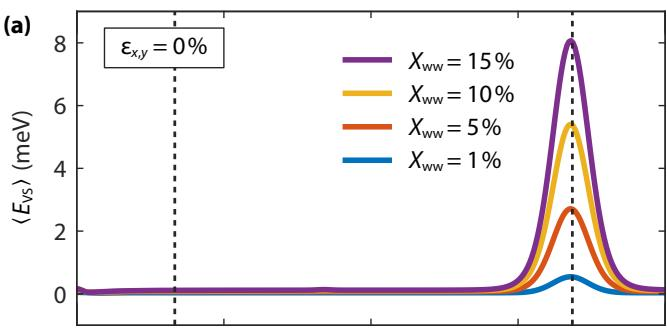
摆动阱的共振地图（平均谷劈裂 vs Ge 调制波数 q 与幅度 X_ww）：无剪切应变时只在 q=2k₀ 有确定性共振；ε{x,y}=0.1% 的剪切应变在 q=2k₁ 解锁新的长周期共振，且劈裂随剪切应变线性增长。图源：Thayil et al. (2025), Fig. 4。_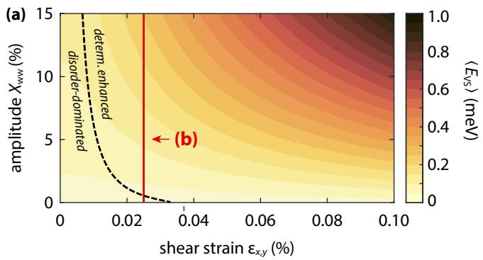
长周期摆动阱的两参数地图（剪切应变 × Ge 幅度）：虚线为 ν=2σ 分界（确定性增强区 vs 无序主导区）——大剪切应变下微小的 Ge 幅度即可进入确定性增强区，热点的统计权重被系统性压低。图源：Thayil et al. (2025), Fig. 5(a)。原子级紧束缚视角：合金键型与界面无序（Jiang 2012）
上节的统一理论在连续介质框架内统计合金无序；原子级模拟给出互补且更细的机制图像。Jiang 等人用 VFF 应变弛豫（修正 Keating 势，阱两侧各 25 nm SiGe）+ sp³d⁵s 近邻紧束缚（电子结构区 4 nm）* 的链条在 NEMO-3D 中处理至 个原子，对 20 个随机原子构型样本统计平均。模型先过两道实验验证：区展开提取的体 SiGe X/L 谷带边与实测定量吻合（含 X–L 交叉），VFF 忠实复现 Si–Si/Si–Ge/Ge–Ge 的三峰键长分布——而虚拟晶体近似（VCA）只有一条平均键长，意味着 SiGe/Si 界面处存在 VCA 完全看不到的位置无序。
结论按主题分四条：
- 无序是主效应：3.8 nm 阱零场 VS 只有无序突变势垒连续模型预言的约 1/3；阱厚 <10 nm 时样本间标准差显著增大——波函数非均匀渗入势垒使”有效阱厚”依赖样本。
- 电场：升至 20 MV/m 时 VS 增大、阱厚依赖被三角阱冲洗，但统计分布更宽（波函数更深地探入无序势垒）。
- 域尺寸：10×10 nm² 横向域的样本涨落大、平均值都未收敛到大域极限——为量子点尺寸做无序平均时要检查域收敛。
- 键型 Gedankenexperiment：25% Ge 的 8 原胞有序构型 {4,6}/{5,6}（无最近邻 Ge–Ge 键）给出偏高的 VS，而含一个 Ge–Ge 键的 {2,6} 把 VS 压回随机合金值——只匹配带错位与有效质量不够，必须计入全部三类键。
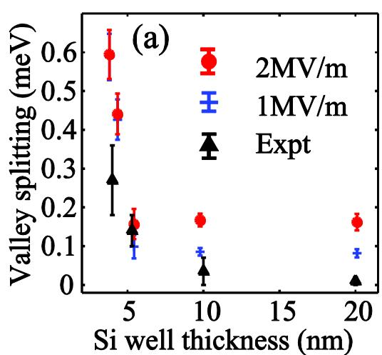
阱厚依赖（1 与 2 MV/m，逐单胞改变厚度）：计算复现实验观测的”阱越薄 VS 越大”趋势（4/5.3/10/20 nm 实验点，未调任何材料参数）；计算值系统性偏高是因为未含已知会压低 VS 的界面切斜（miscut），本文聚焦”平整阱 + 合金无序”。图源：Jiang et al. (2012), Fig. 2。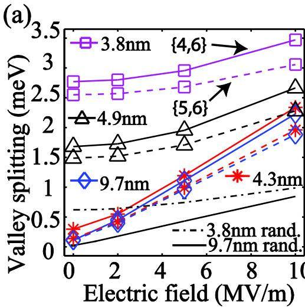
键型效应（有序 25% Ge 势垒，实/虚线为 {4,6}/{5,6} 构型，对照随机势垒）：无 Ge-Ge 键的有序势垒 VS 高于随机情形；纳入最近邻 Ge-Ge 键（{2,6}，另见图 b）后 VS 被压回随机值——Ge–Ge 键是合金无序压低谷劈裂的关键微观通道。图源：Jiang et al. (2012), Fig. 5。δ 掺杂 Si:P 层的谷劈裂与第一性计算基准（Drumm 2013）
STM 光刻的原子精度器件把磷原子放进硅的单个原子层（δ 层），排成阵列、导线、隧道结与量子点——这一施主平台中谷简并的解除同样是首要问题，但量级与阱/点体系完全不同： ML Si:P 单层的谷劈裂（超胞折叠后 – 带极小能差）达 meV 量级，文献预言却散布在 5–270 meV 之间。
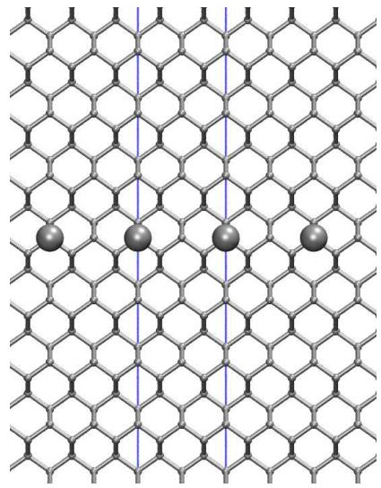
δ 掺杂 Si:P 层的原子模型（沿 [110] 视角，32 层）：Si（小灰球）与取代晶位的 P 原子构成单掺杂层，上下为 Si 包覆层——超胞周期边界会使相邻掺杂层人工耦合，收敛需要 ≥80 层包覆。图源：Drumm et al. (2013), Fig. 2。Drumm 等人的贡献是基组基准化：以平面波 DFT（VASP，截止能可系统提升）为基准，80 层 Si 包覆下 ML 掺杂的谷劈裂收敛于 93 meV；局域数值轨道基 DZP（SIESTA）给 99.5 meV（偏差 7%，且因局域性可算两倍大的系统）；而此前计算常用的 SZP 基给 145 meV——高估 55%，即先前 ab initio 谷劈裂系统性高估逾 50% 的根源在于基组不完备。这条教训与上文”局域 EFT 参考能歧义”一节同构：跨方法对比必须显式基准化，否则数值差异会被误读为物理。
体系本身还有两个敏感性：隐式掺杂把掺杂层沿法向抹平、削弱限域，谷劈裂从显式掺杂的 ~120 meV 跌到 ~7 meV；P 原子排列同样关键——[110] 对齐 ~270 meV、[100] 对齐 ~50 meV、二聚体 ~85、随机 ~80、团簇 ~65 meV。收敛判据方面，– 在 80 层包覆收敛（40 层即差 <0.5 meV）；离子弛豫位移 <0.05 Å、能量收益 <37 meV，可忽略。
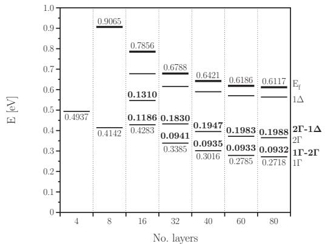
平面波 DFT 的尺寸收敛（1/4 ML 掺杂，最低几个带极小能量 vs 包覆层数）：Γ₁–Γ₂ 差（即谷劈裂）在 80 层收敛到 93 meV，40 层即与之相差 0.5 meV 以内；费米面与 Γ₁ 的间距自 60 层起变化 <1 meV。图源：Drumm et al. (2013), Fig. 5。非局域多谷包络函数理论：局域近似的参考能歧义（Ermoneit 2026）
词条前述各理论框架（二能级哈密顿量、统一包络方程、多谷有效质量理论）都建立在”缓变包络 + 局域势”的有效质量语言上。Ermoneit 等人指出：在硅这类多谷半导体里，这一惯例有一个隐藏的失效模式——局域包络函数理论（local EFT）的谷间耦合不是规范不变的——并给出严格处理谷扇区投影的精确理论作为替代。
精确理论从 Burt–Foreman 型多谷展开出发，不对介观势做缓变近似，经远程能带微扰消去带间耦合后，导带包络满足非局域本征方程
其中 是逆有效质量张量，非局域核 由”投影–相乘–投影”结构构成：Bloch 因子夹着介观势 ，两端各带一个把包络限制在谷专属布里渊区扇区内的截断 δ 函数。谷扇区投影被严格保留，正是哈密顿量自伴性与能量谱实值性的来源。
关键定理是参考能平移不变性：全局势平移 在非局域模型里只平移谷内（对角）项、在谷间（非对角）项中严格相消。一阶简并微扰给出的谷间耦合矩阵元形式上与常规写法相同，
但此处的包络 被限制在自己的谷扇区内（），因而 唯一确定。常规局域理论把截断 δ 函数换成普通 δ 函数、丢掉扇区投影，包络便可携带谷扇区外的短波分量（谱泄漏）；同样的表达式随即失去唯一性：
其中 是歧义度量（ 为倒格矢竖直分量、 为 Bloch 因子乘积的傅里叶系数）：预测的 依赖能量零点的选取——而不同异质结/静电建模工作流的带边参考约定差异很容易引入几百 meV 量级的 。这意味着局域 EFT 计算可以通过”调参考能”去拟合几乎任何实验值，其定量预测与实验解释的资格在锐变势景观中失效。数值量化表明：界面越锐利（几个单层）、量子阱越薄、剖面越尖锐（Ge 尖峰）， 越大；平滑界面的常规阱里歧义可忽略。
修复方案是投影局域模型：把局域包络谱滤波投影回谷扇区（ 后归一化），再用 计算 。它按构造恢复参考能不变性，基准测试中在常规阱、摆动阱等情形与精确非局域结果符合良好（Ge 尖峰处倾向高估）。
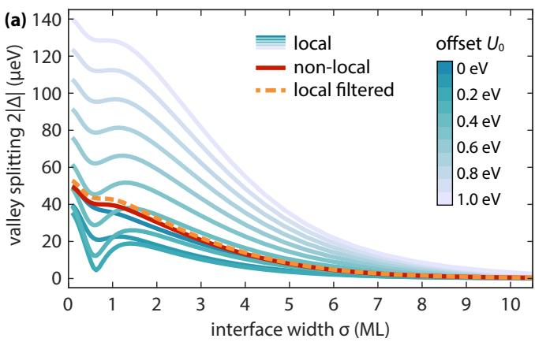
_界面宽度扫描下的谷劈裂：精确非局域模型（红线）与投影局域模型（橙虚线）几乎重合，而局域模型（色标为 0–1 eV 的参考能偏移）在锐界面区展现出强烈的非物理参考能依赖——同一结构、不同能量零点给出截然不同的
。图源：Ermoneit et al. (2026), Fig. 3。_
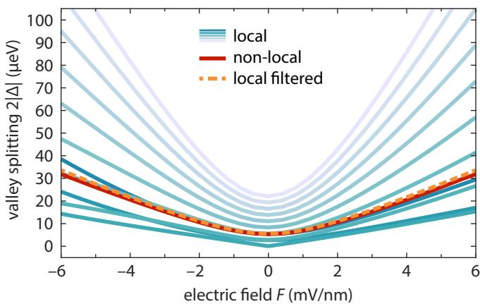
_镜像对称量子阱的对称性检验：对称性要求，精确非局域与投影局域模型均满足；常规局域模型出现非物理的
不对称与强参考能依赖（色标同上图）。图源：Ermoneit et al. (2026), Fig. 4。_
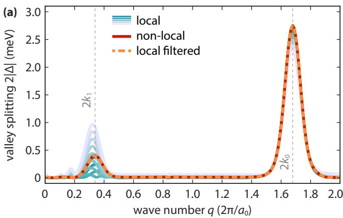
_摆动阱（Ge 幅度，扫描波数
）的谷劈裂：
与
两个共振峰被局域与非局域模型同时捕捉，但
共振附近局域模型表现出强烈的非物理参考能依赖，投影局域模型则紧贴精确结果。图源：Ermoneit et al. (2026), Fig. 5。_
对建模实践的启示：用局域 EFT 报告谷劈裂数值时，应核对结果对参考能平移的稳定性（或直接使用投影局域/非局域模型）；对照实验拟合时尤其要警惕通过调 达成的”符合”。摆动阱等构型的系统化剖面设计另见谷劈裂外延剖面优化词条。
参数与量级
| 体系 | 谷劈裂 | 典型测量方法 | 来源 |
|---|---|---|---|
| Si/SiGe 量子点 | 几 – 量级 | 隧穿线随磁场的拐点（磁输运） | |
| Si-MOS 量子点（典型） | – | 同上，Si/SiO₂ 界面势垒更陡 | |
| Si-MOS 实验报道 | （某样品） | 拐点法，臂杆系数 | |
| Si-MOS（meV 量级） | 接近 的强电场极限 | 强电场下 显著分离 | |
| 含 Ge 量子阱全阵列（21 点） | 平均 、最大 ，瑞利分布 | DAPS，Intel Tunnel Falls， 阱 | Marcks 2025 |
| 谷劈裂空间关联长度 | （≈平均点半径）；局域范围衰减尺度 | 连续谷探针自相关拟合 | Marcks 2025 |
| 阵列尺度关联 | 栅反关联、 正关联，总体约 | 排列检验， | Marcks 2025 |
| 应变锗空穴 | 应变直接解除谷简并， 不再是关心量 | — | |
| 确定性增强的界面宽度窗口 | 无剪切应变约 1 ML；ε_{x,y}=0.05% 时扩至约 5 ML | 统一包络理论 | Thayil 2025 |
| 长周期摆动阱确定性增强 | ε_{x,y}≳0.006%（高幅度）至 ≳0.035%（微幅度）；ν/2σ≈1.41 @ X_ww=15% | 统一包络理论 | Thayil 2025 |
| SGM 台阶探针可靠性上界 | 轨道激发 2.92 meV ≫ 谷劈裂变化 | 针尖诱导点 + 紧束缚 | Cakar 2024 |
| 谷依赖自旋劈裂诊断 | 反推 MV/m、4 个单原子台阶（−24.7/−2.9/18.7/40.4 nm）；预言 eV vs 实验 29 μeV | 两谷 ESR 各向异性 + 紧束缚拟合 | Ferdous 2018 |
| 共振隧穿读出判据 | 小谷区（E_VS<Δz）非线性可改善读出（需谷能级均匀）；两种谷区均有 t_dec/t_meas>100（误差 <1%） | 三-QD NEGF | Tanamoto 2025 |
| QuBus 谷劈裂地图 | 40×400 nm，1.5–200 μeV；Rice 分布 γ=0.1 μeV、σ=64.3 μeV；点半径 18.2 nm、关联 <30 nm | 穿梭点自旋–谷谱 | Volmer 2026 |
| 穿梭退相干阈值 | 自旋–谷共振绝热/二能级穿越分界 ~2.8 m/s（Δ_sv≲300 neV、dE_VS/dx≈3 μeV/nm）；10 μm 穿梭误差 <8% | 传送带穿梭 P_S | Volmer 2026 |
| 局域包络理论的参考能歧义 | 锐界面/薄阱/Ge 尖峰时歧义度量 2|R| 显著，U₀ ~ 数百 meV 即强烈改变 E_VS^loc 预测 | 精确非局域多谷 EFT 基准 | Ermoneit 2026 |
| 投影局域（谱滤波）模型 | 恢复参考能不变性；常规阱与摆动阱符合精确非局域结果，Ge 尖峰处倾向高估 | 一维基准模拟 | Ermoneit 2026 |
| SiMOS 谷劈裂（ST 角度测绘） | 83.1(9) 与 180.3(3) µeV（两点，四能级拟合） | ST 自由感应衰减热点位置，14 个磁场取向 | Jacobson 2026 |
| Si/SiGe（Intel 代工三点的 QD₁,QD₂） | 36.81(1) 与 46.86(1) µeV | 同上，5 个取向 | Jacobson 2026 |
| 自旋–谷耦合 γ 平台对照 | SiMOS 0.730(3)/0.87(2) µeV vs Si/SiGe 0.0504(2)/0.0571(2) µeV（差一个量级）；η≈0.55–0.84 rad，面内最大沿 [110]、节点沿 [1̄10] | 四能级模型拟合 | Jacobson 2026 |
| 热点附近线宽 | >5 MHz（电荷噪声敏感度增强），沿 [1̄10]/[3̄10] 取向更局部化 | FFT 线宽叠加 | Jacobson 2026 |
| 原子级 TB：无序量级 | 3.8 nm 阱零场 VS ≈有序突变势垒计算的 1/3；电场升分布展宽；10×10 nm² 域未收敛 | sp³d⁵s* TB + VFF，20 样本（NEMO-3D，至 5×10⁵ 原子） | Jiang 2012 |
| 原子级 TB：键型 | 含最近邻 Ge-Ge 键（{2,6} 构型）把 VS 压回随机合金值；只匹配带错位不够 | 有序合金 Gedankenexperiment（25% Ge） | Jiang 2012 |
| δ 掺杂 Si:P 层谷劈裂 | 1/4 ML：PW-DFT 基准 93 meV（80 层包覆）、DZP 99.5 meV、SZP 145 meV（高估 55%）；隐式掺杂 ~7 vs 显式 ~120 meV；[110]~270/[100]~50 meV | 平面波 vs 局域基 DFT 收敛研究 | Drumm 2013 |
实验特征 / 测量方法
磁输运（magnetotransport）拐点法
最直接的标定方法是看量子点中前几条电子隧穿线随磁场的演化。在固定栅压区间扫描磁场 ，把隧穿线斜率发生变化的拐点磁场 与塞曼能对齐：
在 Si-MOS 样品中实际测得 ，对应 ，臂杆系数 。第二、三、四个电子隧穿线斜率方向交替变化，恰好可以验证谷–自旋能级结构。该方法依赖 电荷稳定图 和精确的臂杆系数标定。
微波谷谱（valley spectroscopy）
把谷激发与微波光子耦合，在 色散读出 框架下读取谷劈裂对应的频率响应。陈思思 2023 与 都用片上谐振腔探测三量子点中的谷态与激发能级：在双量子点–腔杂化系统中观测”谷劈裂能级信号”，再结合 光子辅助隧穿 读取谷–自旋耦合强度）。这种做法的优势在于可同时获得能谷–微波光子的强耦合关系，把”谷物理”和腔介导耦合纳入同一张能谱图。
谷依赖自旋劈裂的各向异性：界面结构诊断（Ferdous 2018）
两个谷态 各自的自旋劈裂可以不相等——在带微磁体的 Si/SiGe 量子点中旋转面内外磁场方向、分别读出两个谷态的 ESR 频率 ，其差值 （MHz 量级）随角度呈现清晰各向异性，而 本身（GHz 量级）的各向异性由微磁体均匀场 主导（）。 的结构则可干净地拆成两部分：
原子级紧束缚计算表明：仅含内禀 SOI 的曲线复现实验对 的斜率；加上微磁体均匀场不足以对齐数据；只有再加入不均匀场 才定量吻合。其微观机制是界面台阶导致的谷–轨道杂化使两谷态波函数不再相同、偶极矩之差 ，空间变化的磁场因此对两谷态产生不同频移；台阶同样调制内禀 SOI——有效 Dresselhaus 参数 在单原子台阶两侧变号。
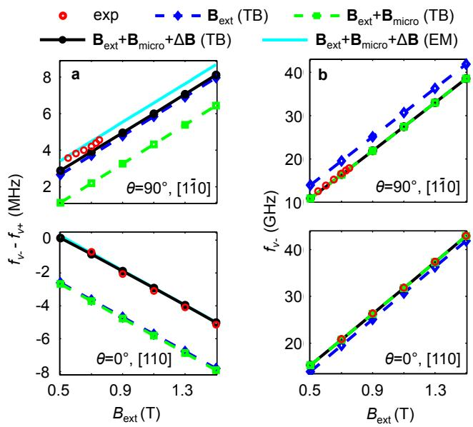
两谷态 ESR 频率差 f_v− − f_v+ 随外磁场的变化（[110] 与 [1̄10] 两个方向）：实验（红圆）对 B_ext 的斜率由内禀 SOI 给出，而 SOI 曲线与数据之间与 B 无关的平移由微磁体不均匀场 ΔB 补齐——两者缺一不可。图源：Ferdous et al. (2018), Fig. 2。
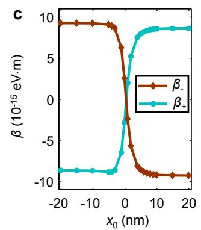
界面台阶对内禀 SOI 的调制：量子点波函数相对单原子台阶的位置记为 x₀，有效 Dresselhaus 参数 β±（两谷态各自）随 x₀ 变化并在台阶两侧变号——点的微观位置决定谷依赖 SOI 的符号与幅度。图源：Ferdous et al. (2018), Fig. 3(c)。
这一测量因此成为界面结构的原位诊断：对同时满足角度各向异性与 依赖两个约束做迭代拟合，可反推垂直电场与台阶构型——Ferdous 等人由此得到 、四个沿 [100] 等距分布的单原子台阶（距点心 、、、），且该构型预言 、与实验值 吻合——微观界面图像与宏观谷劈裂自洽闭环。
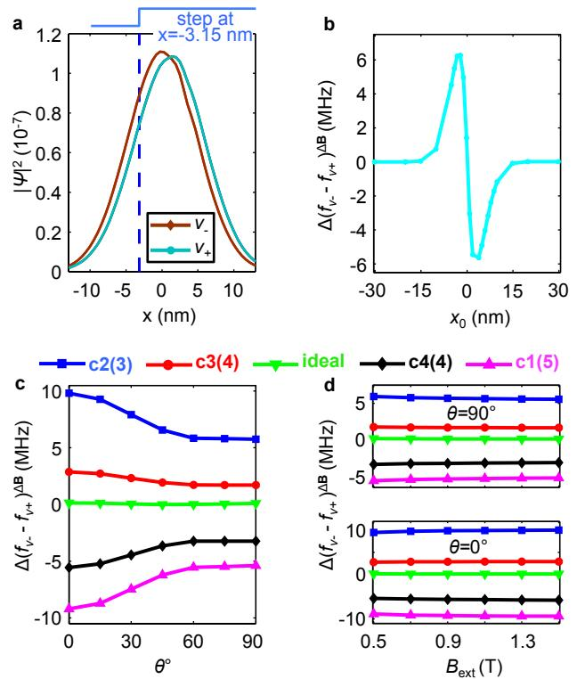
微磁体不均匀场对 f_v− − f_v+ 的单独贡献 Δ(f_v−−f_v+)^ΔB：平界面时几乎为零，存在台阶时显著——谷–轨道杂化使两谷态偶极矩不同，空间变化磁场对它们的作用随之不同；贡献在台阶位于点附近时最大，且几乎不随 B_ext 变化。图源：Ferdous et al. (2018), Fig. 4。
谷激发态本身的弛豫时间（高温运行与读出窗口的相关约束）见”自旋-谷弛豫寿命”一节及自旋退相干词条的声子弛豫理论——多极展开给出的谷弛豫曲线正是那里的定量参照。
自旋–谷耦合的角度测绘：ST 自由感应衰减与平台对照（Jacobson 2026）
Ferdous 式的逐点诊断之外，还有一条批量测绘路线：用S–T₀ 比特的自由感应衰减同时读出两点各自的自旋–谷热点。Jacobson 等人在两块器件——Sandia 制造的 SiMOS 双点（富集 500 ppm ²⁹Si、热氧化 SiO₂ 界面）与 Intel 代工的 Si/SiGe 三点器件（约 5 nm 富集 800 ppm ²⁹Si 阱、自然丰度 Si₀.₇Ge₀.₃ 势垒）——上，于 (4,0)/(3,1) 跃迁附近制备 S(3,1) 并让它被两点 Zeeman 能差 驱动旋转，原位扫描磁场大小并更换取向（SiMOS 14 个、Si/SiGe 5 个），对演化时间做 FFT 得到 S–T 旋转频率-磁场图谱：每个点在其 处出现发散/间断——即自旋–谷热点，旋转频率由此成为谷劈裂的灵敏探针（Si/SiGe 的 由势垒 ⁷³Ge 与阱内残余 ²⁹Si 的 Overhauser 场主导）。
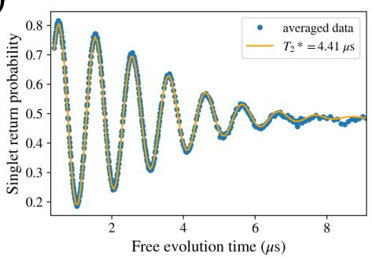
_S–T₀ 自由感应衰减示例（Si/SiGe，B∥[110]=50 mT，30 分钟平均）：高斯衰减正弦拟合给出；同器件沿 [100] 原位扫场时旋转频率在 ~324 与 ~412 mT 出现两处间断——两点各自的自旋–谷热点。图源：Jacobson et al. (2026), Fig. 2。_
数据用四能级模型统一拟合：基谷自旋二态 加两点激发谷极化态，
其中 是 Rashba/Dresselhaus 之差给出的 g 因子差（ 为磁场相对晶轴的取向）， 是自旋–谷耦合，其角度依赖为
为谷间自旋轨道矩阵元幅度、 为其相对 [100]/[010] 的相位——由 Rashba/Dresselhaus 矩阵元 的叠加 推出。
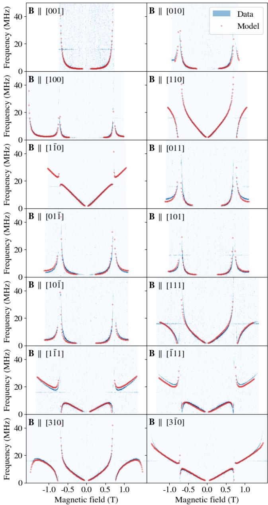
SiMOS 器件 14 个磁场取向下的 S–T 旋转频率-磁场图谱（FFT 归一化着色，红线为四能级模型拟合）：两处发散对应两点各自的 Zeeman–谷劈裂共振；发散宽度反映自旋–谷耦合强度、整体斜率反映 g 因子差。Si/SiGe 器件（5 个取向）的图谱形态类似而热点位置更低（谷劈裂更小）。图源：Jacobson et al. (2026), Fig. 3。拟合结果的平台对照是本文的核心发现：SiMOS 的谷劈裂（83.1(9) 与 180.3(3) µeV）比 Si/SiGe（36.81(1) 与 46.86(1) µeV）高 2–5 倍，自旋–谷耦合 （0.730(3)/0.87(2) µeV）比 Si/SiGe（0.0504(2)/0.0571(2) µeV）大一个数量级——两者都与 SiMOS 电子被更强地压在 Si/SiO₂ 界面一致（Si/SiGe 的较小带错位限制了可施加的电场）；g 因子差两平台相当，（Dresselhaus 主导）。而角度依赖几乎不随平台改变：–0.84 rad ，面内 沿 [110] 取最大、节点沿 [1̄10]（含 [001] 法向的大圆上 ）。
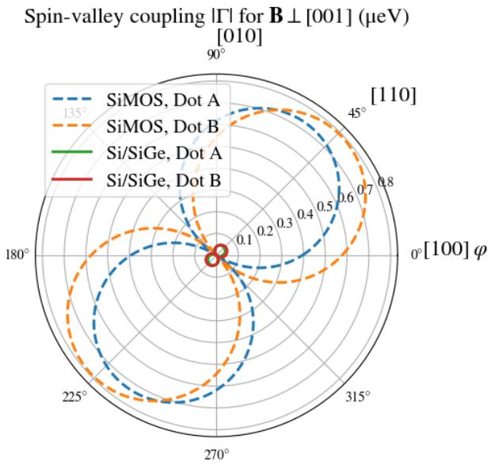
_面内（B⊥[001]）自旋–谷耦合的角度依赖：两平台的四个点都在 [110] 晶向取最大——各向异性形状几乎相同、只差幅度重标度（SiMOS 比 Si/SiGe 大一个量级）。g 因子差的角度依赖同样两平台等价（差 π/2 旋转与重标度），在取极值。图源：Jacobson et al. (2026), Fig. 6。_
热点形态分类学把频率-场曲线按 符号分成三类（、、）：前两类给出手性相反的斜渐近线，第三类在两处谷劈裂都出现纯发散。机理可用”惰性态”论证理解——同自旋的谷态之间没有谷间耦合， 对 点热点”惰性”、能量只是随 g 因子差线性倾斜；另外两态经 反交叉形成热点。
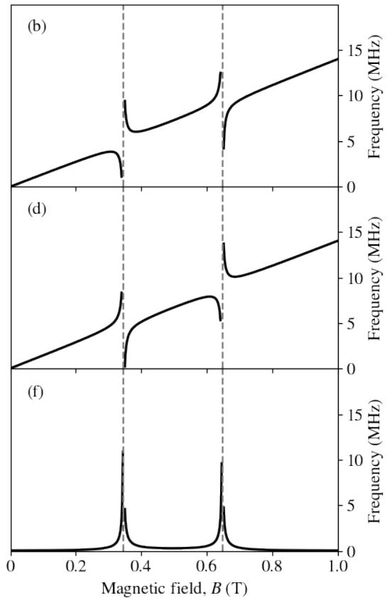
_自旋–谷热点的形态分类学（模型示例、
eV、
eV）：Δg 的符号决定斜渐近线的手性，Δg≈0 时两处均为纯发散；发散宽度 ∝ 自旋–谷耦合、渐近线斜率 ∝ g 因子差——一条频率-场曲线同时定出三类参数。图源：Jacobson et al. (2026), Fig. 8。_
对操作的直接指引：B∥[001] 最小化 g 因子差（适合磁噪声受限的 Si/SiGe 比特），但热点效应在法向接近最大；热点附近 FFT 线宽可超过 5 MHz（电荷噪声敏感度增强的退相干），而线宽增宽沿特定取向（如 [1̄10]、[3̄10]）更局部化——SiMOS 比特若更怕 /电荷噪声，选 [1̄10] 取向可在热点附近保持更窄线宽。附加结果：SiMOS 热点位置随磁场取向移动，提示谷劈裂本身的磁场取向依赖（磁场限域改变波函数对界面的采样）；Si/SiGe 三点器件换一对点（QD₂,QD₃）测量时出现多个频率分量，与制备 ramp 时间依赖一起指向激发谷态的占据。
通过电荷跃迁观测谷–轨道耦合
隧穿线随栅压扫描的非线性偏移反映电化学势对栅压的杠杆臂，结合电子数依赖的”增加能 ” 可推出谷–轨道耦合对能级重整化的贡献—— 指出”硅量子点的增加能随电子数明显下降”与谷–轨道耦合有直接关系。
扫描栅显微探针（SGM）：可移动的单电子谷探针
前述方法都基于固定栅定义的量子点，谷劈裂的空间测绘受栅几何限制。Cakar 等人提出并数值验证了第四条路线：把带偏压 的扫描栅显微（scanning gate microscopy）针尖悬在样品上方 35 nm 处，针尖本身诱导出一个可移动的量子点。数值方案用薛定谔–泊松求解器加两个关键加速器——复合重叠网格（全局网格算储库电荷、子域网格算点的电荷与电子态）与把针尖位置参数化的有效边界条件算子（系数与偏置无关、只标定一次，消除移动针尖的重网格噪声）——实现了对移动点的低噪声模拟。
单电子装载协议分六步完成：源漏储库先填充、plunger 栅下形成单电子点；降低源漏电压耗尽储库；针尖移近并提高 、同时降低 plunger 电压，把电子从栅下点绝热转移到针尖势阱中；各栅设为等电位以平化势场；最后针尖拖着电子移动 350 nm 到远离图形化栅的区域。绝热性判据是全程单电子占据且基态保持在费米面以下、第一激发态在其上。
探针演示针对上界面 nm 处的单原子台阶：针尖点沿 扫过台阶时，波函数跟随针尖移动，紧束缚模型计算的谷劈裂在台阶正上方出现急剧凹陷——缺陷位置由此被直接成像。可靠性由能标分离保证：谷劈裂的变化远低于 2.92 meV 的第一轨道激发能，测量不会被轨道混杂污染。既然芯片上谷劈裂涨落（约 20–300 µeV）的主要来源是合金无序与原子台阶，SGM 把”谷劈裂–材料缺陷”的空间关联测量从阵列统计推进到逐点成像。
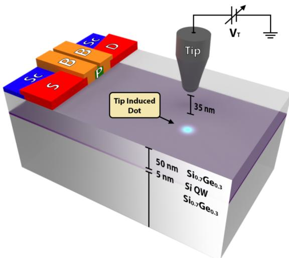
实验方案示意：Si₀.₇Ge₀.₃/Si(5 nm)/Si₀.₇Ge₀.₃(50 nm) 异质结上叠层栅（screening/source/drain/plunger/barrier），SGM 针尖偏压 V_T、悬于表面上方 35 nm 并可在 xy 面自由移动，针尖诱导量子点（浅蓝）。图源：Cakar et al. (2024), Fig. 1。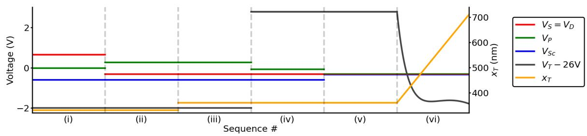
六步电子装载协议的栅压与针尖位置时序：(i–ii) 储库填充并在 plunger 栅下隔离单电子；(iii–iv) 针尖电压升高、plunger 降低，把电子转移到针尖势阱；(v) 各栅等电位平化势场；(vi) 针尖携电子移动 350 nm 到无栅区——全程保持绝热单电子占据。图源：Cakar et al. (2024), Fig. 2(b)。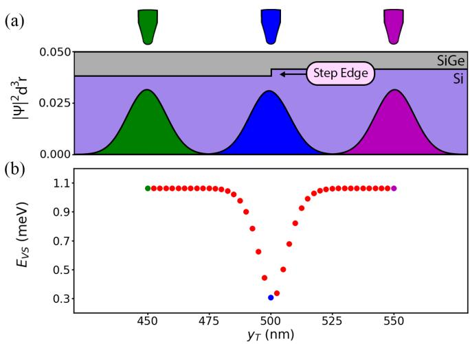
谷劈裂的空间探针演示：上界面 y=500 nm 处的单原子台阶（势阱图叠加三个针尖位置 y_T=450/500/550 nm 的波函数概率幅）；针尖点扫过台阶时谷劈裂在 y_T=500 nm 出现急剧凹陷——缺陷位置被直接成像，且变化远低于 2.92 meV 轨道激发能。图源：Cakar et al. (2024), Fig. 3。谷劈裂对单发读出的限制
在 Si-MOS 中详细测量了”自旋选择性隧穿读出”和”泡利自旋阻塞读出”两条路径：前者受源漏费米面热展宽限制、后者在硅量子点里又受到谷激发态的限制。当 时，硅中两电子 – 读取的窗口被压回 量级，读出保真度会随温度与磁场条件漂移。这也解释了为什么 Si-MOS 比 Si/SiGe 更易在 量级获得高保真单发读出。
尺寸与位置的定量依赖：谷劈裂不仅由界面台阶决定，还随量子点的尺寸和位置系统变化——有效质量近似+原子级界面建模给出完整的参数图：小点（波函数紧贴界面，台阶效应强）劈裂大而涨落也大；大点劈裂小但更均匀；点在台阶间的位置决定劈裂的相位。这给”谷劈裂的可设计性”给出定量边界：通过点尺寸/位置设计可以规避低劈裂区，但不能完全消除涨落。
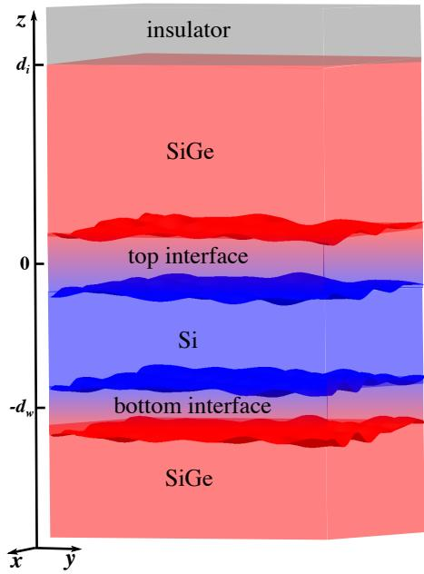
谷劈裂的尺寸/位置依赖：有效质量+原子界面的联合建模——小点劈裂大但涨落大，大点均匀但劈裂小。图源：arXiv:2310.17393，Fig. 1。
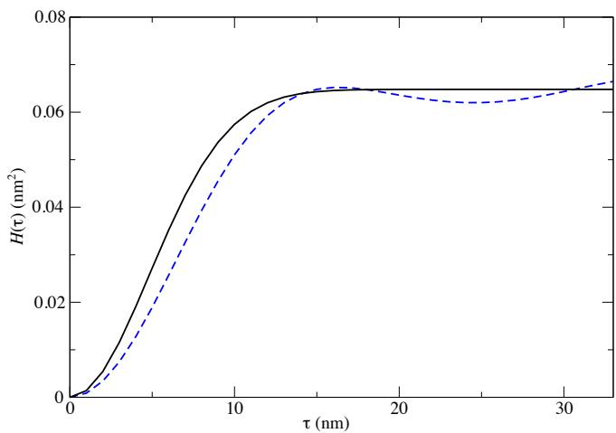
台阶位置的相位效应：点在台阶间的位置决定劈裂——可设计性的定量边界。图源：arXiv:2310.17393，Fig. 2。
共振隧穿读出架构中的谷劈裂判据：Tanamoto 与 Ono 用非平衡格林函数把谷劈裂的影响推进到”沟道-QD 共振隧穿读出”架构——比特-QD（、）与一条直接接晶体管的沟道-QD（）并联，源漏电流 的非线性共振特征区分比特态。自旋选择性来自隧穿选择定则：↑-电流只在比特处于 时与比特-QD 交换 ↑ 电子、↓-电流只在 时交换 ↓ 电子——每个 QD 都携带两条谷能级 （，单态能级同样劈裂）时，沟道-QD 与比特-QD 的谷能级对齐决定共振窗口。结论按谷区分两半：
（中间区 有自旋翻转，该理论未处理。）两种情形都存在 的工作区——按 – 估算可支持 100 次以上重复读出、测量误差 <1%，与表面码要求的重复测量兼容。谷能级不均匀性（如 、、 的非均匀组合）是主要的破坏因素——与上文的介观统计结论一致。
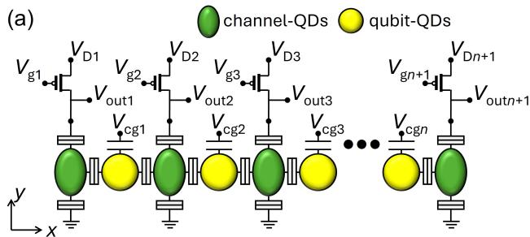
共振隧穿读出架构：比特-QD（黄）与沟道-QD（绿）并排、沟道-QD 直连晶体管，源漏电流 I_D 反映比特态；读出模式（V_D≠0）下沟道-QD 能级扫过 QD 的共振能级 E_i。图源：Tanamoto & Ono (2025), Fig. 1。
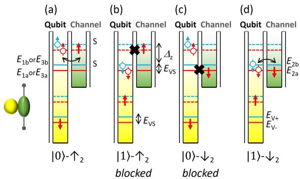
小谷区的自旋选择性隧穿：↑-电流只在比特态 |0⟩ 时交换 ↑ 电子（上两幅）、↓-电流只在 |1⟩ 时交换 ↓ 电子（下两幅）；E_V± 与单态谷能级 E_ia/E_ib 的对齐决定共振窗口。图源：Tanamoto & Ono (2025), Fig. 3。
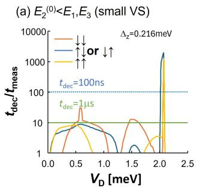
t_dec/t_meas 随 V_D 的变化（两组能级配置）：虚线以上满足 t_dec=100 ns 时可做 >100 次读出、实线以上对应 t_dec=1 μs 的同样判据——两种谷区都存在误差 <1% 的工作窗口。图源：Tanamoto & Ono (2025), Fig. 10。
自旋-谷弛豫寿命与高温运行
上节的静态建模之外，谷劈裂的两个动态维度：
自旋-谷弛豫：激发谷态的寿命 随谷劈裂可调的测量——谷劈裂减小时，基谷-激发谷的声子辅助弛豫通道打开， 从毫秒级急剧缩短。这把”谷劈裂多大才够”从经验规则（）升级为动力学定量：弛豫率随劈裂的依赖直接标定泄漏通道的强度。
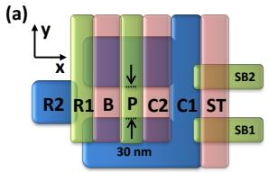
自旋-谷寿命的可调测量： 随谷劈裂的变化——劈裂减小打开声子辅助弛豫通道，寿命急剧缩短。图源：Yang et al. (2013)，Fig. 1。
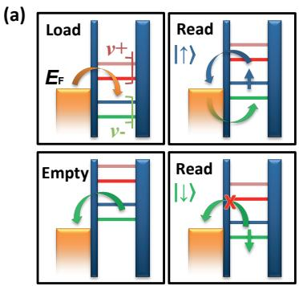
弛豫率的劈裂依赖：泄漏通道的动力学定量——“劈裂多大才够”的定量标定。图源：Yang et al. (2013)，Fig. 2。
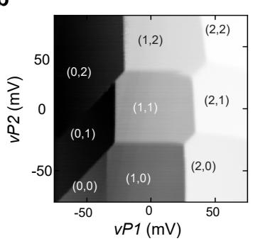
限域驱动的高劈裂：埋层量子阱的强限域——谷劈裂超过 4K 热能，高温运行条件满足。图源：arXiv:2607.09570，Fig. 1。
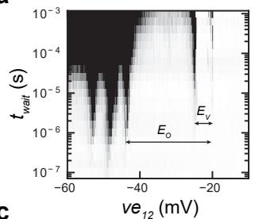
机理与验证：窄阱增强界面波函数振幅——台阶散射效应增强的定量。图源：arXiv:2607.09570，Fig. 2。
跨阵列的介观关联：合金无序的统计指纹（Marcks 2025）
单点、单器件的谷劈裂测量之上，还有”跨阵列均匀性”这一可扩展性维度：多比特器件横跨介观距离，谷劈裂是否处处够大直接决定良率与电子穿梭方案。Marcks 等人在 Intel 制造的 Tunnel Falls 一维量子点阵列（1.3 μm 沟道、栅间距 60 nm、最多 12 点、可成点位置 21 个）上系统回答了这个问题——量子阱为含 Ge 的 （4.6 nm 厚，夹在 中，参数按”最大化平均谷劈裂”的理论建议选取）。
测量用失谐轴脉冲谱学（detuning axis pulsed spectroscopy, DAPS）在双点组态下读单电子谷劈裂；更关键的是连续谷探针技术：不把谷劈裂当作量子点的属性，而是平移目标点势阱，让电子波函数沿沟道连续扫过材料——谷劈裂随位置 起伏的曲线直接探测底层无序。对曲线做自相关 并拟合理论模型，得到关联长度 ，与该数据集的平均点半径 19 nm 吻合：观测到的 涨落来自电子波函数对更快材料涨落的平均，探针分辨率受点半径限制。联合概率密度分析进一步给出：给定某点谷劈裂后，间距 处谷劈裂的预期范围按 的尺度指数衰减，在 时饱和——局域合金无序关联在波函数尺度内消逝。
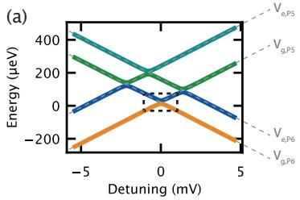
DAPS 谷劈裂测量：(a) 双量子点单电子能级示意与脉冲时序——沿失谐轴脉冲越过极化线，谷激发态的热占据随谷劈裂变化反映到电荷态统计上；(b) 测得谱线用双洛伦兹拟合提取 ，误差由谱线线宽给出。图源：Marcks et al. (2025)，Fig. 2。
跨全阵列 21 个点的统计：平均谷劈裂 、最大 ，直方图符合合金无序主导理论预言的瑞利分布（有限抽样下的偏斜属预期行为）； 与点半径无系统依赖，确认无序主导而非尺寸主导。阵列尺度的归一化自相关 在相隔 个栅（负关联）与 个栅（正关联）处出现最大幅度，对应约 720 nm 的总体关联长度——用排列检验（permutation test）评估显著性：把数据随机重排生成零分布，真实统计量落在零分布中的位置给出 p 值；以 为界， 的反关联比 的关联更显著。亚 100 nm（波函数尺度）与 >1 μm（器件尺度）两个长度尺度上的关联都与合金无序主导的模拟一致。
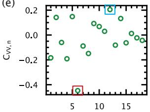
全阵列谷劈裂：(a) 21 个量子点的 （误差由 DAPS 线宽给出）；(b) 直方图与理论瑞利分布（实线）的对照；(c) 与电子半径无系统依赖；(d) 空间序列的傅里叶变换无长程振荡分量；(e) 归一化自相关 ， 反关联、 正关联最大；(f) 排列检验 p 值。图源：Marcks et al. (2025)，Fig. 5。
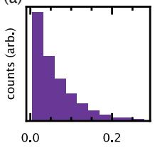
排列检验的显著性评估：(a) 随机重采样一维序列上的自相关零检验分布，(b) 对 的零分布（直方图）与真实数据统计量（绿色虚线）对照，阴影面积为 p 值。图源：Marcks et al. (2025)，Fig. 6。
对器件设计的含义：含百分之几 Ge 的量子阱确实抬高平均谷劈裂，但无序同样留下低劈裂”口袋”，会压低制造良率并威胁穿梭；跨栅与跨器件尺度的关联意味着相邻比特的谷致误差不独立，阵列级纠错与建模需要介观统计输入。
穿梭通道的 E_VS 地图与移动自旋相干性（Volmer 2026）
阵列统计之上还有”穿梭通道内逐点”的维度：Volmer 等人在浓缩 的 QuBus 传送带穿梭器件上，用穿梭点自身的自旋–谷谱测出 40 nm × 400 nm 的二维 地图—— 在 1.5–200 μeV 间大幅起伏，直方图服从 Rice 分布（确定性分量 、无序展宽 ，合金无序主导），自相关拟合给出穿梭点半径 、30 nm 之外无关联——地图方法本身成为异质结质量的基准工具。
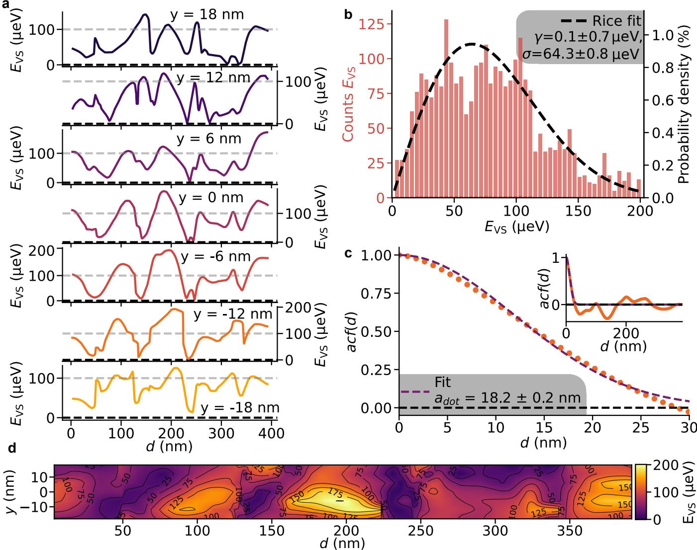
穿梭通道的谷劈裂地图：(a) 不同 1DEC 位置 y 下 E_VS 随穿梭距离 d 的迹线；(b) 2800 个样本的直方图与 Rice 分布拟合（γ=0.1 μeV、σ=64.3 μeV）；(c) 自相关函数（高斯拟合，关联长度 ≈ 点半径）；(d) 线性插值得到的二维 E_VS(d,y) 地图。图源：Volmer et al. (2026), Fig. 2。
在这张已知地图上穿梭单个电子并测单态回返概率 ，直接确认了移动自旋退相干理论预言的两条谷致通道：
- 低 区：（，无共振）时，ST 振荡幅度恰好在第一个 的位置骤降——谷激发直接抢占占据数；
- 自旋–谷共振（）：低速绝热穿越共振触发自旋–谷 flip-flop，把自旋叠加转化为谷叠加、随即被 涨落快速退相（拟合自旋–谷耦合 、共振处 ）；速度超过约 后穿越变为二能级式，共振无损通过。
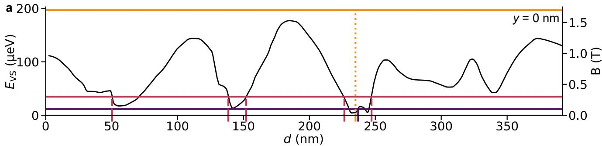
已知 E_VS 地图上的穿梭相干性：(a) y=0 的 E_VS 迹线叠加三个磁场的 Zeeman 能（水平线）——竖虚线为自旋–谷共振、点线为低 E_VS 区；(b–d) B=1.7/0.3/0.1 T 的 P_S(d,τ_S)：高场下相干损失对准低 E_VS 区、低场下对准第一个共振，且高速穿越（如 2.8 m/s）能保住振荡幅度；(e–g) 沿 τ_S 的 FFT 显示谷占据组分在过共振后消失。图源：Volmer et al. (2026), Fig. 3。
反复穿梭与运动变窄：对同一段含低 区的 280 nm 路径做 次往返，快速频繁穿越反而进入运动变窄（motional narrowing）区——谷退相干被平均掉、 衰减显著变慢。配合轨迹选择（在 地图上绕开问题区），10 μm 累计穿梭的误差 <8%，数十 μm 的相干上限由移动自旋与一个静止自旋的耦合（可用于生成纠缠）决定，而不再由谷物理决定——传送带穿梭由此拿到进入硅量子芯片互连方案的实证路线图。
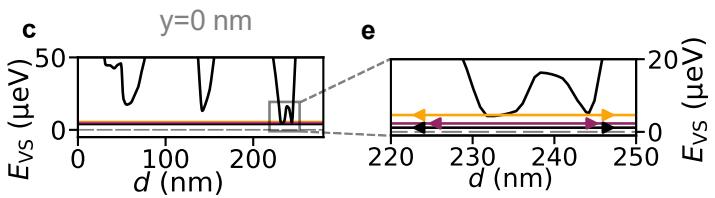
反复穿越 E_VS 景观的相干性：(a)(c)(e) E_VS 迹线局部与对应 Zeeman 能；(b)(d)(f) 不同速度/磁场下 P_S 随总穿梭时间 τ=2n_rep·τ_S 的衰减——快速频繁穿越低 E_VS 区进入运动变窄区、衰减变慢；(g) 谷激发率 γ 与 B 的指数衰减模型及六个拟合值；(h) 各参数组合下 P_S 随累计穿梭距离的归一化。图源：Volmer et al. (2026), Fig. 4。
计算框架的第三块与构型扩展
扩展区有效质量近似（含应变）：第三种计算框架——有效质量近似（词条已有）在扩展区（布里渊区边界）处理谷间耦合，应变作为形变势进入。三种框架（有效质量/原子界面/扩展区+应变）对照使用，覆盖不同精度-效率权衡。
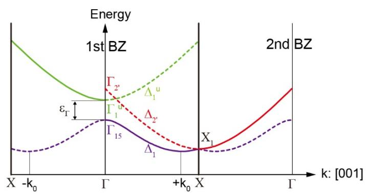
扩展区有效质量近似：含应变的谷劈裂计算——第三种理论框架。图源：arXiv:2309.05219，Fig. 1。
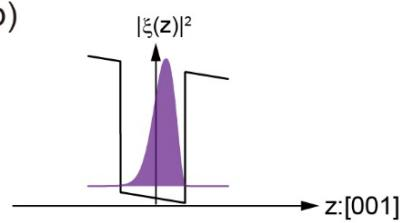
框架验证：三种方法的劈裂预测对照。图源：arXiv:2309.05219，Fig. 2。
硅角点的电场调谐：纳米线角点（corner dot）构型——电场直接调谐谷劈裂，构型自由度+电场自由度的双重调控。
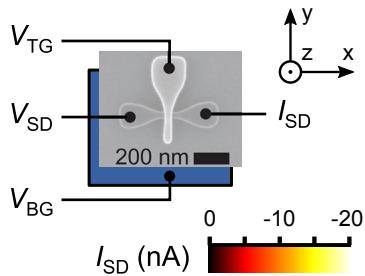
硅角点的谷劈裂电场调谐：纳米线角构型——构型+电场双重调控。图源：Ibberson et al. (2018)，Fig. 1。
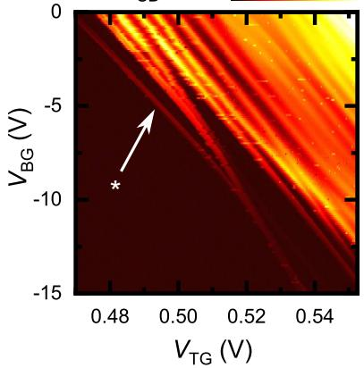
角点的调谐范围：电场扫描下的劈裂变化。图源：Ibberson et al. (2018)，Fig. 2。
非微扰多谷有效质量理论（Gamble 2016）：第四种框架——波函数的动量空间支撑被限制在两个低 lying 导带极小附近，谷间耦合非微扰地进入，配合静电模拟可直接算真实器件构型，且支持对随机界面的高通量采样。用它同时模拟 SNL 与 UNSW 两个单电子 Si-MOS 实验的谷劈裂-栅压曲线，发现理想平整界面下需要给全部电极加约 的统一偏移 才能贴合数据——远超典型阈值电压漂移，本身即成为界面无序存在的定量判据；引入无序界面采样后理论与实验定量一致。
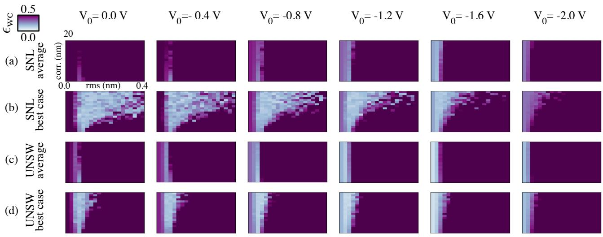
多谷有效质量理论与单电子 Si-MOS 实验的对照：(a) SNL 器件、(b) UNSW 器件，点为实验（误差带），曲线为用实验电压加 统一偏移 生成的理论族；最佳拟合 远超典型阈值漂移，指向界面无序。右轴为对应的垂直电场。图源：Gamble et al. (2016)，Fig. 2。
与其他概念的关系
- 半导体量子点：量子点是谷劈裂的实验室载体；谷劈裂属于量子点内禀属性而非电极调控量。
- 二维载流子气：谷自由度本来属于 2DEG/2DHG；引入量子点之后把六重简并逐步解除。
- Si/SiGe：通过双轴张应变实现第一级劈裂（ vs ），但 Si/SiGe 化学界面较”软”，原子台阶会显著抑制谷劈裂。
- Si-MOS：Si/SiO₂ 界面更陡， 通常比 Si/SiGe 高 5–10 倍，是其可在 量级工作的关键。
- 应变锗：Ge/SiGe 在价带顶把 LH/HH 简并与谷简并一并解开，因此空穴自旋比特不再受谷劈裂困扰——这是应变锗作为长相干平台的额外优势。
- 锗棚顶纳米线：自组装 Ge/Si 核壳结构同样把谷简并去除，与应变态锗互补。
- 双层石墨烯量子点：另一种”谷物理”—— 谷劈裂由谷 g 因子 给出且 随点尺寸静电可调 4.5 倍，与硅的界面耦合机制互为对照。
- 单自旋量子比特：自旋量子比特的能量基底由”最低谷 × 自旋”张成，谷劈裂决定最低谷与第一激发谷之间的能隙。
- S–T₀ 比特：在硅双量子点中 态能级差取决于谷与轨道的混合， 较小时读出窗口受限。
- 交换相互作用： 指出 Si-MOS 中” 在 meV 量级，对应磁场大于 “——所以高于 的工作磁场下 valley 激发态可以忽略，双比特门哈密顿量可以只保留自旋自由度）。
- 电偶极自旋共振： 强调，在异质结界面上人为引入原子台阶可以人为放大自旋–谷–轨道耦合，从而显著增强基于自旋–轨道耦合的 EDSR 翻转频率。实验上 的自旋–谷热点本身就能把硅电子的内禀 SOC 驱动急剧放大（同时带来弛豫增强与 Chevron 畸变的代价），见该词条”自旋–谷热点增强的内禀 SOC”一节——热点谱学的反交叉拟合同时是逐点标定 与自旋–谷耦合矩阵元的方法。
- EDSR 的另一种实现：通过电压控制谷相位、间接调节自旋–轨道矩阵元。
- 色散读出 与 腔介导耦合：用片上谐振腔探测谷态与谷能级。
- 电荷噪声：谷相位随电噪声起伏，会给 引入额外低频涨落；这正是 所列”能谷劈裂及 SOC 效应的空间涨落”之一。
- SOT 操控：通过自旋轨道力矩改变杂散场方向，可在不破坏谷劈裂的前提下调节有效自旋–轨道耦合。
- 激光退火欧姆接触：为保住单层精度 Ge 剖面与界面锐度（谷劈裂的设计资源）而生的接触工艺——把退火热预算从全局压到接触区，避免热扩散抹平谷劈裂工程。
- 谷劈裂外延剖面优化：把摆动阱、窄阱、Ge 尖峰等构型统一为带谱约束的变分优化问题，得到可靠性更高且电场可调 200 µeV–1 meV 的调制摆动阱。
- 翻转模式量子比特：合金无序造成的谷劈裂器件间涨落不只是相干性问题——含真实合金无序的 RB 系综模拟显示，谷劈裂过小的器件会给可达隧穿耦合设上限，从而约束甚至完全禁止翻转模式 EDSR 操作，直接影响 FM 比特的良率。
- 有效二维包络函数理论：把垂直方向按 Born–Oppenheimer 投影掉之后，谷劈裂与谷相位成为二维模型中自然涌现的局域场——量子点扫过原子台阶时谷相位呈约 的系统调制、劈裂在 0.15–0.7 meV 间互补变化，为界面-谷参数映射提供分钟级正演工具。
- 电荷穿梭（“全向穿梭”一节）：一维轨迹注定撞上低谷劈裂区（），多通道与二维 clavette 栅传送带把绕开谷激发做成几何路由问题，前提正是这里的二维 地图；双点中谷相位差 δφ 决定谷内/谷间隧穿分配（|t₋|/|t₊|=tan(δφ/2)）并可由电荷分布拟合或隧穿电流比读出，见该词条”单次转移的保真度理论”一节。
参考文献
- 硅量子点中的谷劈裂与谷物理：Zwanenburg et al., RMP 85, 961 (2013)、Burkard et al., RMP 95, 025003 (2023)。
- 跨阵列谷劈裂关联与合金无序统计：Marcks, J. C. et al. Valley Splitting Correlations Across a Silicon Quantum Well Containing Germanium (2025). arXiv:2504.12455（QAtlas 缓存：2504.12455）。
- 非微扰多谷有效质量理论与单电子 Si-MOS 对照：Gamble, J. K. et al. Valley splitting of single-electron Si MOS quantum dots (2016). arXiv:1610.03388（QAtlas 缓存：1610.03388）。
- Thayil, A., Ermoneit, L., Kantner, M. Theory of Valley Splitting in Si/SiGe Spin-Qubits: Interplay of Strain, Resonances and Random Alloy Disorder. Physical Review B (2025). DOI: 10.1103/4sdz-f9cr；arXiv:2412.20618（QAtlas 缓存：2412.20618）。
- Cakar, E., Ercan, H. E., Fuchs, G., Denisov, A. O., Anderson, C. R. et al. Towards Utilizing Scanning Gate Microscopy as a High-Resolution Probe of Valley Splitting in Si/SiGe Heterostructures. Applied Physics Letters (2024). DOI: 10.1063/5.0217704；arXiv:2405.03596（QAtlas 缓存：2405.03596）。
- Ferdous, R., Kawakami, E., Scarlino, P., Nowak, M. P., Ward, D. R., Savage, D. E., Lagally, M. G., Coppersmith, S. N., Friesen, M., Eriksson, M. A., Vandersypen, L. M. K., Rahman, R. Valley dependent anisotropic spin splitting in silicon quantum dots. npj Quantum Information 4, 26 (2018). DOI: 10.1038/s41534-018-0075-1；arXiv:1702.06210（QAtlas 缓存：1702.06210）。
- Tanamoto, T., Ono, K. Effects of valley splitting on resonant-tunneling readout of spin qubits. Applied Physics Letters (2025). DOI: 10.1063/5.0260516；arXiv:2501.13289（QAtlas 缓存：2501.13289）。
- Volmer, M., Struck, T., Tu, J.-S., Trellenkamp, S., Degli Esposti, D., Scappucci, G., Cywiński, Ł. et al. Impact of the local valley splitting on the coherence of conveyor-belt spin shuttling in Si/SiGe. Nature Communications (2026). DOI: 10.1038/s41467-026-74382-5；arXiv:2510.03773（QAtlas 缓存：2510.03773）。
- Ermoneit, L., Thayil, A., Koprucki, T., Kantner, M. Exact Multi-Valley Envelope Function Theory of Valley Splitting in Si/SiGe Nanostructures (2026). DOI: 10.1103/md2x-s44y；arXiv:2602.14787（QAtlas 缓存：2602.14787）。
- Jacobson, N. T., Foster, N. D., Jock, R. M., Rudolph, M., Mounce, A. M., Ward, D. R., Carroll, M. S., Luhman, D. R. Anisotropic spin-valley coupling in SiMOS and Si/SiGe quantum dots (2026). arXiv:2604.16713（QAtlas 缓存：2604.16713）。
- Jiang, Z., Kharche, N., Boykin, T., Klimeck, G. Effects of Interface Disorder on Valley Splitting in SiGe/Si/SiGe Quantum Wells. Applied Physics Letters (2012). DOI: 10.1063/1.3692174；arXiv:1110.4097（QAtlas 缓存：1110.4097）。
- Drumm, D. W., Budi, A., Per, M. C., Russo, S. P., Hollenberg, L. C. L. Ab initio calculation of valley splitting in monolayer δ-doped phosphorus in silicon. Nanoscale Research Letters 8, 111 (2013). DOI: 10.1186/1556-276X-8-111；arXiv:1201.3751（QAtlas 缓存：1201.3751）。
完整文献库（含各篇站内全文页）见 参考文献库。